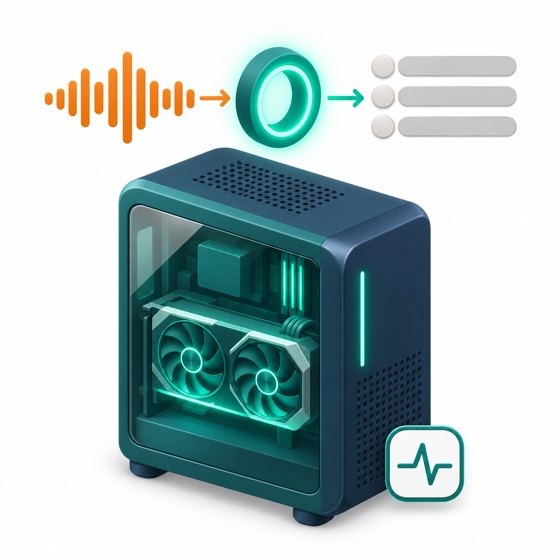
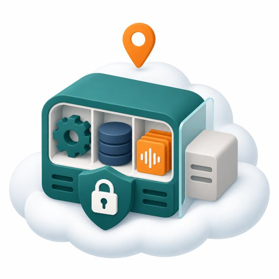
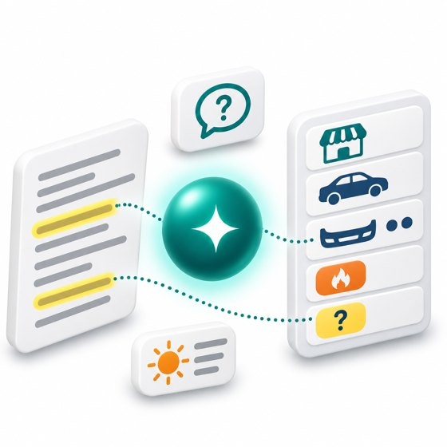

① 쓰는 곳 — 현장의 기기
누구나 · 브라우저만 있으면휴대폰 · 태블릿 · PC
- 설치 없이 주소로 접속(홈 화면 추가 가능)
- 통화 목록 · 카드 · 찾기 · 묻기 · 브리핑을 본다
- 실시간 받아쓰기 체험은 브라우저 음성 인식(Web Speech, 크롬 계열) — 음성은 브라우저 회사 서버가 처리
대리점 · 녹음이 쌓이는 PCPC 프로그램 (폴더 감시)
src/pc-agent의 watch 모드- 녹음 폴더에 새 파일이 생기면 서버로 올림
- 파일 이름은 중립 이름으로 바꿔 보냄 · 이미 보낸 파일은 다시 안 보냄(처음 켤 때
--skip-existing이면 있던 파일 건너뜀) - 걸려 온 번호는 안 보냄 → 이 길로 온 녹음은 번호로 거래처 맞추기(F11) 안 됨

그래픽카드 있는 PC · 지금은 배*결 PC받아쓰기 일꾼 (Whisper)
- faster-whisper large-v3 · GPU(RTX 5060 Ti) · float16
- 서버에서 일감을 가져가서 받아쓰고 결과를 돌려줌(서버가 PC 로 못 들어옴)
- 낱말 사전(현장 말)을 힌트로 씀 · 20초마다 「살아 있음」 신호
- 3분 통화 약 12.6초 · PC 가 꺼지면 받아쓰기는 줄 서서 기다림
HTTPS 화면 · API
녹음 올리기 · 카드 고치기 · 찾기 · 묻기
녹음 파일 보내기
POST /api/ingest올리기 토큰
일감 가져가기 → 16kHz WAV
받아쓴 글 · 문장 시각 돌려줌
일꾼 토큰
일꾼 토큰
② 데모 서버 — 모든 데이터와 화면이 사는 곳

AWS Lightsail · 서울 리전2 vCPU · RAM 1GB · Ubuntu 24.04 · 같은 서버에 다른 실서비스가 함께 돈다
https://t07.3-39-67-126.sslip.io — Caddy 가 HTTPS 인증서를 자동으로 받는다
웹 앱 src/app
- Node 24 · 빌드 없음 · 직접 의존성은 Claude SDK 하나
- 화면(
public/)과 API(routes/)를 함께 냄 - 전용 사용자로 가둠 · 메모리 300MB 상한
녹음 변환 · 일감 줄
- 올라온 녹음을 ffmpeg 로 16kHz 모노 WAV 로 바꾸고 원본은 지움
- 받아쓸 일감을 줄 세우고 일꾼에게 빌려줌 · 10분 안에 답이 없으면 다시 줄로(3번까지)
데이터베이스 node:sqlite
calls 통화cards 카드jobs 일감workers 일꾼glossary 낱말 사전briefings 브리핑trials 체험 신청usage 사용량
오디오 WAV 도 서버 디스크에 · 시각은 UTC 로 저장, 「오늘」은 한국 시간
데모 데이터
- 가짜 통화 61건(대본 → 합성 음성 → 전화 음질)
- 10분마다 날짜를 오늘에 맞춰 다시 놓음 · 08:05 전에는 「어제 흐름」을 보임
- 관리자 「데모 초기화」로 처음 상태로
서로 막아 둔 것
공개 저장소의 코드를 자동으로 실행하므로, 앱은 따로 만든 사용자 · 정해진 폴더(/var/lib/callnote)에만 쓰게 가뒀다. 같은 서버의 다른 실서비스는 손대지 않는다. 녹음 보관용 비공개 S3 버킷은 만들어 두었지만 데모는 쓰지 않는다(실제 녹음 칸은 아무 키도 권한 없음).
받아쓴 글 + 낱말 사전 · 거래처 · 차종 목록
정해진 모양의 JSON 카드로 받음
(카드 · 브리핑 · 답)
(카드 · 브리핑 · 답)
데모 사이트의 AI 호출은 서버에서만 한다. 브라우저에는 키가 없다.
(실제 녹음 시험만 PC 가 가린 글을 직접 보냄 — D)
(실제 녹음 시험만 PC 가 가린 글을 직접 보냄 — D)
③ AI — 글을 읽고 정리하는 곳

Claude APIAnthropic · 해외 서버
모델 claude-opus-5-5 · 생각 깊이 low (빠르고 싸게)
구조화 출력: 정해진 JSON 모양으로만 답하게 함
안전 정책으로 거절하면 서버 쪽 대체 모델로 넘어감
상한: 하루 400번 · 기기(IP)당 하루 40번 · 10분 12번
구조화 출력: 정해진 JSON 모양으로만 답하게 함
안전 정책으로 거절하면 서버 쪽 대체 모델로 넘어감
상한: 하루 400번 · 기기(IP)당 하루 40번 · 10분 12번
주문 카드 정리F04 · F05 · F07
거래처 · 차종 · 연식 · 차번호 · 부품 · 수량 · 급함 · 다시 물어볼 것. 칸마다 그 말을 한 대목을 근거로 붙임. 품번은 불러 준 것만, 지어내지 않음.
오늘 브리핑 · 할 일F10
숫자는 서버가 세고, AI 는 한 단락 요약과 「먼저 할 일」만 쓴다.
지난 통화에 묻기F09
저장된 통화 글 · 카드만 근거로 답하고 근거 통화 · 문장을 붙인다. 없으면 「찾지 못했어요」.
Claude 는 음성을 직접 받아쓰지 못한다 → 받아쓰기는 PC 의 Whisper(①) 또는 브라우저 음성 인식이 맡는다.